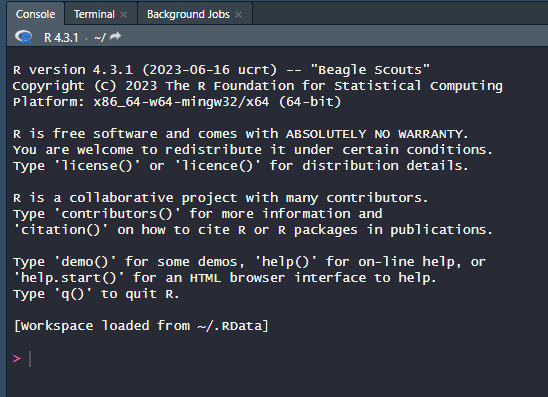
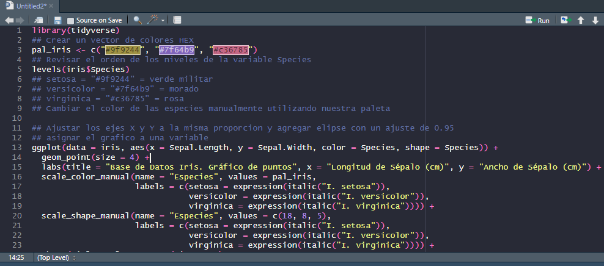
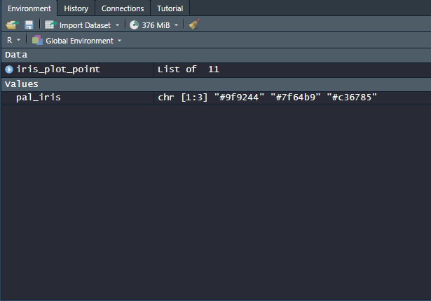
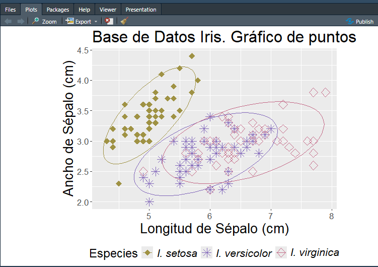
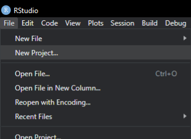
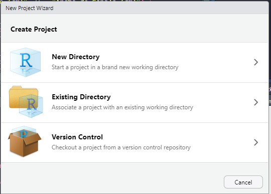

Apuntes sobre R y Rstudio
¿Qué es R y qué es RStudio?
- R es un lenguaje de programación enfocado en el análisis de datos y estadísticas.
- RStudio es un entorno de desarrollo integrado (IDE) que facilita el trabajo con R y permite organiza los proyectos y facilita la ejecución de código, la visualización de gráficos y la gestión de paquetes.
Partes de RStudio
RStudio tiene cuatro paneles principales:
Console: Donde se ejecuta el código en tiempo real.

Editor de scripts: Para escribir y guardar código en archivos
.r,.Ro.Rmd.
Environment/History: Muestra variables y comandos previos.

Files/Plots/Packages/Help: Para manejar archivos, visualizar gráficos, instalar programas y acceder a documentación.

Creación de un Proyecto en RStudio
Beneficios de trabajar con proyectos:
- Organización de archivos y código.
- Facilita la reproducibilidad.
- Evita problemas con rutas de archivos.
Para crear un proyecto:
En RStudio, ir a
File > New Project.
Elegir un directorio nuevo o existente.

Trabajar siempre dentro del proyecto para evitar problemas de rutas.
Organización de Proyectos en RStudio
Mantener una estructura organizada en los proyectos es clave para la reproducibilidad y eficiencia. Se recomienda la siguiente estructura de carpetas:
proyecto/
│── data/ # Datos crudos y procesados
│── scripts/ # Código fuente en R
│── output/ # Resultados y gráficos
│── reports/ # Documentación y reportes
│── README.md # Descripción del proyectoAdemás, para lograr una nomenclatura eficiente y consistente en archivos, se pueden seguir algunas pautas:
- Consistencia: Usar un esquema de nombres consistente en todo el proyecto.
- Evitar Espacios: Usar guiones bajos (_) o guiones (-) en lugar de espacios.
- Prefijos y Sufijos: Usar prefijos y sufijos estandarizados para identificar el estado o versión del archivo.
- Evitar Acentos y Caracteres Especiales: No utilizar acentos, eñes ni caracteres especiales que puedan causar problemas de compatibilidad en diferentes sistemas operativos o herramientas de software.
Ejemplos:
bears_cytb.nex
tree_BD.Rev
multifig.R
qw_feature2.csvRutas Absolutas y Relativas
Las rutas de archivos en R pueden ser absolutas o relativas:
Ruta absoluta: Define la ubicación exacta de un archivo, por ejemplo:
read.csv("C:/Users/TuUsuario/Documents/data/datos.csv")Ruta relativa: Se basa en la ubicación del proyecto:
read.csv("data/datos.csv")
Siempre es recomendable usar proyectos para evitar errores con rutas.
Principales Objetos en R
Vectores
x <- c(1, 2, 3, 4, 5)
print(x)Matrices
m <- matrix(1:9, nrow=3)
print(m)Data Frames
df <- data.frame(Nombre=c("A", "B", "C"), Edad=c(25, 30, 22))
print(df)Listas
lista <- list(Nombre="Juan", Edad=30, Notas=c(8, 9, 10))
print(lista)Asignación de Variables
Diferencia entre <- y =:
a <- 10 # Recomendado para asignaciones
b = 20 # También funciona, pero es mejor evitarloUso de Funciones en R
Ejemplo de funciones básicas:
numeros <- c(1, 2, 3, 4, 5)
mean(numeros) # Media
summary(numeros) # Resumen estadísticoInstalación y Uso de Paquetes
install.packages("ggplot2")
library(ggplot2)
help(ggplot2) # Consultar documentaciónAcceder a los archivos de Ubuntu en RStudio
Ejecuta el siguiente comando en PowerShell:
wsl.exe wslpath -w ~Mostrará una dirección como la que se muestra:
\\wsl.localhost\Ubuntu\home\tu_usuarioEn RStudio puedes establecer el directorio de trabajo en la carpeta de Ubuntu (WSL) usando
setwd(). Ten cuidado en las diuagonales, en powershell las diagonales son invertidas * y cuando las utilices en R utiliza las diagonales normales /*:setwd("//wsl.localhost/Ubuntu/home/tu_usuario/mi_proyecto")